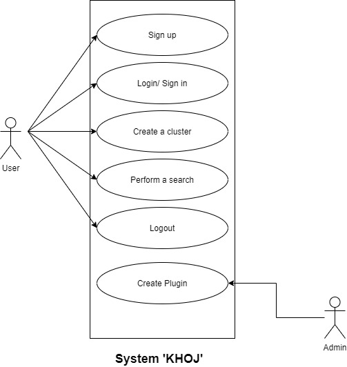
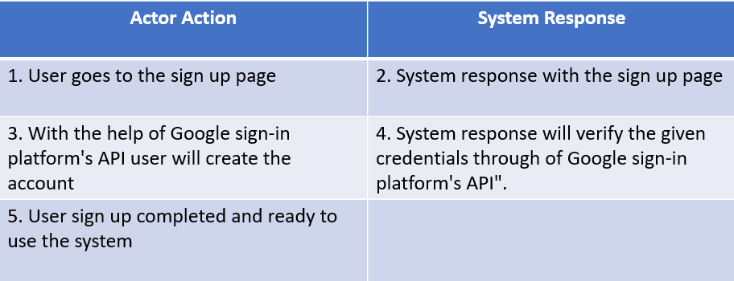
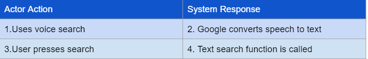
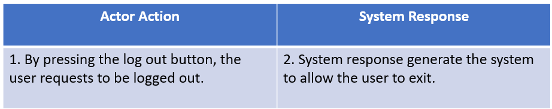

Software Requirements Specification
for
KHOJ
KHOJ
Version 1.0 approved
Prepared by
Mohammed Bashem - 2012667642
Khundker Mohammad Sarwar Khalid - 2011625642
Farhan Ishraq Omi 2012842642
Maisha Amin - 2013788642
North South University
16/11/2021
Table of Contents
1. Introduction
1.1 Purpose -------------------------------------------------------------------------- 4
1.2 Document Conventions --------------------------------------------------------- 4
1.3 Intended Audience and Reading Suggestions --------------------------------- 4
1.4 Product Scope ------------------------------------------------------------------- 4
1.5 References ----------------------------------------------------------------------- 4
2. Overall Description
2.1 Product Perspective--------------------------------------------------------------- 4
2.2 Product Functions ---- ----------------------------------------------------------- 4
2.3 User Classes and Characteristics ------------------------------------------------- 4
2.4 Operating Environment ---------------------------------------------------------- 5
2.5 Design and Implementation Constraints ---------------------------------------- 5
2.6 User Documentation ------------------------------------------------------------- 5
2.7 Assumptions and Dependencies ------------------------------------------------- 5
3. External Interface Requirements
3.1 User Interfaces -------------------------------------------------------------------- 5
3.2 Hardware Interfaces -------------------------------------------------------------- 6
3.3 Software Interfaces --------------------------------------------------------------- 6
3.4 Communications Interfaces ------------------------------------------------------ 6
4. System Features
4.1 System Feature 1 ----------------------------------------------------------------- 6
4.2 System Feature 2 (and so on)----------------------------------------------------- 7
5. Other Nonfunctional Requirements
5.1 Performance Requirements-------------------------------------------------------- 9
5.2 Safety Requirements -------------------------------------------------------------- 10
5.3 Security Requirements ------------------------------------------------------------ 10
5.4 Software Quality Attributes ------------------------------------------------------- 11
5.5 Business Rules --------------------------------------------------------------------- 11
6. Other Requirements
Appendix A: Glossary ------------------------------------------------------------------ 11
Appendix B: Analysis Models ---------------------------------------------------------- 11
Appendix C: To Be Determined List ---------------------------------------------------- 11
1. Introduction
The introduction of the Software Requirements Specification (SRS) provides an overview of the entire SRS with purpose, scope, definitions, acronyms, abbreviations, references, and an overview of the SRS. The detailed requirements of the software ‘KHOJ’ are provided in this document.
1.1 Purpose
The purpose of this SRS document is to provide a detailed overview of our software product ‘KHOJ’, its parameters, and goals. This document describes the project's target audience and its user interface, hardware and software requirements. Moreover, this document describes the usage of our software and required functionality lucidly so that the clients and involved developers can easily comprehend the project and what to do if anything needs to be changed.
1.2 Document Convention
The SRS contains italic and bold text and some diagrams like ER diagrams and UML diagrams. There are several
main topics. Under the main topic, there are some subtopics numbered 1-9. The subtopic contains some
explanations. A detailed description of the font style is provided below:
Main Topics: Font Name: Calibri, Font Style: Bold, Size: 18
Sub Topics: Font Name: Calibri, Font Style: Bold, Size: 14
Other Explanations: Font Name: Calibri, Font Style: Normal, Size: 12
1.3 Intended Audience and Reading Suggestions
This SRS document's intended audience includes clients, the developer team, researchers, business analysts, and the project manager. With its excellent overview, this SRS will provide readers with a thorough understanding of the finer details of this project. For example, the clients will have clear instructions on how to handle the project (website/app). By understanding the project's theme, business analysts will be able to plan their marketing and promotion more effectively. The document is written in simple English for a wide range of audiences. Last but not least, the developer team will be benefited the most from the document because they need to know every detail about the software. This document explains who this software is for, how and where it will be used, and what it can accomplish. It is suggested that the SRS be read in order using the index provided above.
1.4 Product Scope
The purpose of KHOJ is to provide search engine capabilities that are confined to a specified domain. The user will provide a set of URLs that will be the basis of the search. The user can also provide the depth of the search. KHOJ will start crawling through these URLs and collect the data (whose type can also be specified by the user). Every webpage that is within the depth constraints will be searched,crawled and their data scraped,processed and stored. After the data is ready the user will be notified and will be given the ability to use the search engine to retrieve data relevant to what the user is looking for. KHOJ is mainly aimed at researchers who need information from certain websites rather than the whole internet. We hope that the targeted searching capabilities will save time and allow our users to gather relevant information in a better way.
2. Overall Description
This section deals with a broad overview of the product 'KHOJ' as a search engine, explaining the functionalities and goals that the software aims to achieve. It also provides details on the dependencies, constraints, operating environment of the product along with user classes and user manuals.
2.1 Product Perspective
This product is a self-contained product. It mainly originated from the need of certain users to search data confined to a limited domain, unlike Google or Bing where searches are done across their whole database. KHOJ aims to provide a fast and fluid system to allow our users to get the data they actually need in a reasonable amount of time.
2.2 Product Functions
The product functions are user dependent as the perspective of this app is to make it easier for the user to search data within the user provided URLs. Admins function is to create new crawling strategies as plugins. Builtin crawling strategies will be all .txt files, PDF files, MS-Word files, non-HTML files etc meaning that the user wants to search the data in these files inside the given URLS. In order to make the functions comprehensible, a use case diagram of the user and admin is demonstrated below -

2.3 User Classes and Characteristics
The user can access the software ‘KHOJ’ from two different platforms: Web and Android App. There are 2 kinds of actors for the software who are the Users, and the admin. Users can access the software from both the web and phone app but admin can only access it through the web. Both the actors need to sign in first to use the software. The only job of an admin is to add new crawling strategies as a plugin. The users can create and use search clusters. A search cluster consists of several URLs with one or more crawling strategies and search-depth. The crawling strategy indicates the type of data and files the software would crawl and fetch data. Users will be able to use the search feature with both text and voice search commands to search from the mobile app but not create clusters.
2.4 Operating Environments
The operating environment of KHOJ is listed as follows:
- Platform: Web and Android
- Web server: Any operation system with Python 3.9 and poetry installed.
- Client System: Any system with a modern web browser or for android with android version 7.0+
- Database Configuration: Postgresql
- Indexing Server: Solr
2.5 Design and Implementation Constraints
For mobile, only android is supported for now and users can search both with text and voice in addition to the operations they can do on the web. People using devices with Android versions lower than 7 can not use the android version of this application. For voice search, it relies on google speech to text functionality and will not work if Google is down.
2.6 User Documentation
The product will provide users with basic running instructions. and A short tutorial video that shows how to use the entire software.
2.7 Assumptions and Dependencies
To utilize the system, the user must have a working internet connection. For web users, there must be a browser to access the product. The phone user must also have a minimum of Android version 7 installed. It may take up to 24 hours for a cluster to become usable after it has been created with the URLs.The user will be notified via email when the cluster is ready. This product, once again, is reliant on the Google sign-in platform's API and Google speech to text API. The product could be affected if these assumptions are incorrect, are not shared, or change.
3. External Interface
3.1 User Interfaces
The user will be taken to the home page first. A user will be able to login and register here. The user can sign in using Google and then proceed to the task. The user will enter the URL and select the crawling strategies and depth. The types of files specified by the user are referred to as crawling strategies. Crawling strategies include PDF files, txt files, MS-Word files, and any other non-HTML text content. Only textual contents of those files in the URLs will be crawled and indexed. When a user searches for something in a cluster's URLs, the user will be provided with the URLs of those pages. Within the depth limitations, every webpage will be crawled, searched, and the data scraped, processed, and stored. When the data is ready, the user will be notified and given the option of utilizing the search engine to get data that is relevant to their search. This is intended for people who only need information from a few websites rather than the entire internet.
3.2 Hardware Interfaces
The mobile app version of the software 'KHOJ' might need a microphone to avail text to speech search feature.
3.3 Software Interfaces
'Khoj' mainly relies on the following :
Python Scrapy - To crawl, scrape and export the data from webpages. This framework provides a very efficient and easy system to scrape data from the web. When the user provides a URL to 'KHOJ', this URL will be passed to a crawler in Scrapy which will then start gathering data starting from that URL.
Lucene - To index and query, the data that Scrapy will export, Lucene will be used which is a Java based library that deals with all sorts of operations relating to text, the two of which 'KHOJ' will use the most are indexing and retrieving data.
Apache Solr - This is a search engine, which provides the search capabilities of Lucene via HTTP requests. The scraped data from webpages will be fed to Solr to be stored and indexed. When the user performs a search, Solr will be used to query the data via HTTP requests and return a response.
Django - This will be the framework that will be used to design the main web app.
Postgresql - This will be the database where 'KHOJ' will store the raw text data that Scrapy will extract.
3.4 Communications Interfaces
The application will send data to Solr through Solr API for indexing and querying. From android application will communicate through its rest API. From android google speech to text will be used for voice queries. All these communications will happen via HTTP. For authentication, google sign in will be used. Security will be granted by google.
4. System Features
The system features stated below are the core building blocks for the 'KHOJ' application.
4.1 Sign up
Stimulus/ Response SequencesThe following expanded use case shows the response sequences between the actor actions and the system responses.
Overview : To use the system the user needs to sign up. By using Google sign-in platform's API users can easily sign up.
Cross Reference : Not applicable.
Typical Course of Events:
Table 1.0 : Typical Course of Events
Alternate Course of Actions :
Steps 4 and 5 - The user may enter incorrect Google account credentials. As a result, the user will be returned to the sign-up page.
Exception:
- If Google is down, the user is unable to sign up.
4.2 Login
Stimulus/ Response SequencesThe following expanded use case shows the response sequences between the actor actions and the system responses.
Overview : A user has to login to the system first to use the features of the system. For login, a user can use google account credentials. Once logged in, a user is ready to create clusters and make search attempts within the created clusters to get desired search results.
Cross Reference : Not applicable.
Typical Course of Events:
Table 2.0 : Typical Course of Events
Alternate Course of Actions :
Steps 4 and 5 - The user might provide wrong credentials of Google account. So, the user will be taken back to login page again.
Exception:
- If Google is down, the user is unable to login.
4.3 Create Clusters
Stimulus/ Response SequencesThe following expanded use case shows the response sequences between the actor actions and the system responses.
Overview : To create a cluster of URLs of which the user may perform searches, the user has to input one or more URLs and can assign a depth to which the URL will be searched. The user can also specify the type of data that the system should find/look through. Afterwards the system will crawl and scrape the data according to the rules set by the user.
Cross Reference : None
Typical Course of Events:
Table 3.0 : Typical Course of Events
Alternate Course of Actions :
Step 4 and 5 - User might enter the same link twice. The system will alert the user if this happens.
4.4 Perform Search (through text)
Stimulus/ Response SequencesThe following expanded use case shows the response sequences between the actor actions and the system responses.
Overview : After one or more search clusters have been made, a user may perform a search on the clusters. After the user enters a string into the search bar, the system will use its text searching capabilities to go through the data that belongs to the selected clusters and return URLs to webpages that contain words from the string provided by the user.
Cross Reference : 4.3
Typical Course of Events:
Table 4.0 : Typical Course of Events
Alternate Course of Actions :
Step 3 - No matches to the input string are made and the system informs this to the user.
4.5 Perform Search (through voice)
Stimulus/ Response SequencesThe following expanded use case shows the response sequences between the actor actions and the system responses.
Overview : It converts the voice search by user to text and sends to text search functionality and returns the result got from that one.
Cross Reference : 4.4
Typical Course of Events:
Table 5.0 : Typical Course of Events
Alternate Course of Actions :
Step 1 - If voice search is not available then inform the user.
4.6 Log Out
Stimulus/ Response SequencesThe following expanded use case shows the response sequences between the actor actions and the system responses.
Overview : To exit from the system the user needs to log out. By clicking the Logout button the user will easily exit from the system.
Cross Reference : 4.1
Typical Course of Events:
Table 6.0 : Typical Course of Events
Alternate Course of Actions :
Write here!!
Exception:
- Write here if there is any, else remove this!
4.7 Install Plugins
Stimulus/ Response SequencesThe following expanded use case shows the response sequences between the actor actions and the system responses.
Overview : Admin will install a plugin for users to use for scraping a specific files present in a URL.
Cross Reference : None
Typical Course of Events:
Table 7.0 : Typical Course of Events
Alternate Course of Actions :
Step 3 - If invalid plugin then inform the user
5. Other Nonfunctional Requirements
5.1 Performance Requirements
Text search: When searching through a cluster,the system should not take more than a few seconds to start returning results. Users might often have many
things to search for, so each search operation needs to be very quick or else the user's experience may not be satisfactory.
Data: Large volumes of data can be scraped off of websites so the system needs to be able to handle this.
Mobile App: Needs to be lightweight and responsive.
Database: Needs to be suited for handling the raw data that will be scraped. If this is slow it might bottleneck the whole system.
5.2 Safety Requirements
The URLs that the user provides to the system to be crawled has to be provided by the own risk of the user. The user has to make sure that the URLs allow the system to crawl and scrape data.
5.3 Security Requirements
The system shall not disclose any personal information about the users. The Application shall not grant access to an unauthorized user and the Application shall not communicate with any other devices or servers while in use by the user. The system will preserve the copyright of the content that has been crawled and indexed since it will not show the data that has been crawled rather refer to the URL source of the data to the user. Moreover, if any URL has a policy to prevent scraping the data, the system would not crawl or scrape that URL.
5.4 Software Quality Attributes
The software quality attributes of our app - is listed below:
- AVAILABILITY : As the system will be hosted in cloud servers it will be available all the time for users.
- CORRECTNESS: The system will pull appropriate information from the receipt images and use Google’s Vision API to provide accurate information based on the users request
- MAINTAINABILITY: The system will store and maintain all uploaded copies of the receipts.
5.5 Business Rules
The website will be free for all. Every user will get all features for free. Users can donate to the application through GitHub.
6. Appendix
Appendix A: Glossary
Definitions, acronyms, and abbreviations are listed below:
Appendix B: Analysis Models
Not available at this moment.